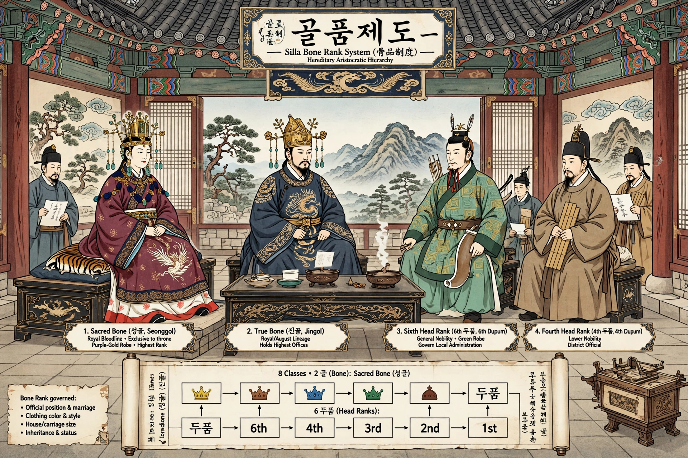

The bone rank system (골품제도, golpum jedo) was the hereditary caste system of the Korean kingdom of Silla, ranking aristocratic families by "bone" purity and determining their offices, marriages and privileges.

At the top were the seonggol (sacred bone), from whom kings were drawn, followed by jingol (true bone), then head ranks (dupum) six through one. Rank limited the maximum government post, house size, clothing and carriage a person could have.
The rigid system caused resentment among talented lower-rank officials such as those of head rank six. It weakened as Silla declined and was a factor in late Silla unrest, disappearing with Goryeo's new order, though its influence lingered.